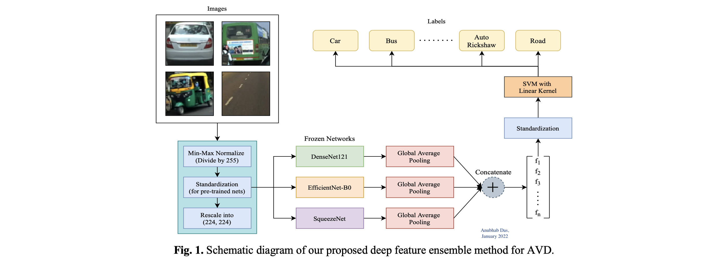

Experience
Indsutrial & Academic Experience in Software Development, Data Science & ML (mostly) listed in reverse chronological order.
Software Development Engineer 1 | Textify AI, India
April 2023 – Present
Tech Stack: Python, FastAPI, MongoDB, Redis, Amazon S3
- Re-factored back-end infra to automatically deploy newly submitted apps using dynamically created objects
- Integrated 70+ mini ChatGPT-powered AI applications on Textify App Platform
- Facilitated cross-functional meetings with front-end team to discuss API usage & application flow.
- Designed dashboard app cards, alert screens, custom app UIs, pop-up forms in Figma
Software Development & ML Intern | Textify AI, India
Dec 2022 — Mar 2023
Tech Stack: Python, FastAPI, MongoDB, Redis
- Built API endpoints to implement app-specific request queueing using SSE (Server-Sent Events) & Redis
- Deployed 24 GB GPT-J model with 6 billion parameters on an AWS EC2 instance for classifying complaints
- Implemented basic CI/ CD pipelines using GitHub Actions for deploying backend APIs.
- Built multiple demos for client projects spanning Text summarisation, Translation & Question answering.
Visiting Researcher | Nokia Bell Labs (Social Dynamics Group), Cambridge
 July 2023 – Present
July 2023 – Present
Project 2: Studying health discussions on social media
July 2023 - Present
Tech Stack: Python, NumPy, Scipy, Pandas, Matplotlib, Seaborn
- Ideating & implementing ways to study various forms of engagement in health discussions on social media

Project 1: Unpacking dream content on Reddit (Link)
March 22 - April 23
Tech Stack: Python, NumPy, Pandas, Spacy, NLTK, NetworkX, Matplotlib, Plotly, Gephi
- Developed a methodology using BERTopic to extract common topics & themes in self-reported dreams on Reddit. (Research accepted & has been presented at IC2S2 conference, Copenhagen)
- Studied the prevalence of extracted themes across time & across vivid, recurring, lucid dreams & nightmares
- Created co-occurrence networks of common themes & health symptoms in dream reports to visualize 40k dreams

Machine Learning Research Intern | Jadavpur University, India
 September 2020 - April 2021 & January 2022 - March 2022
September 2020 - April 2021 & January 2022 - March 2022
Project 3: Emotion detection from EEG signals using hybrid 1D-CNN + LSTM
February 2022 - March 2022
Tech Stack: Python, NumPy, Keras, Scikit-learn, Matplotlib
- Subject Dependent Approach; Accuracy: 94.11% for valence, 94.39% for arousal (emotion dimensions)
- Subject Independent Approach; Accuracy: 90.09% for valence, 91.39% for arousal

Project 2: Automatic Vehicle Detection using feature ensemble of pre-trained networks
January 2022
Tech Stack: Python, NumPy, PyTorch, Scikit-learn, Scikit-image, OpenCV, Matplotlib
- Classification of patches of images of road scenes in structured (GTI) & unstructured driving scenes (IDD)
- Method 1: Light-weight feature-extractor - Histogram of Oriented Gradients (HoG) with Linear SVM - 89.73% accuracy
- Method 2: Ensemble of 3 pre-trained CNNs as feature extractors with Linear SVM - 99.83% accuracy

Project 1: Comparative Analysis of Generative Adversarial Networks for Bangla Character Generation
September 2020 - April 2021
Tech Stack: Python, NumPy, PyTorch, Scikit-learn, Matplotlib
- Trained 3 GANs : DCGAN, ACGAN & WGAN-GP for Bangla character generation
- Dataset used : BanglaLekha-Isolated (84 bangla characters : Numerals, basic & compound characters)
- Performance comparison using Inception Score (IS) & Fréchet Inception Distance (FID). Fine-tuned Inception Model prior to evaluation for better evaluation.
- Preliminary attempts have been made to explore the latent space using vector arithmetic to generate unseen compound characters. Some samples for the same, can be seen in the following figure.